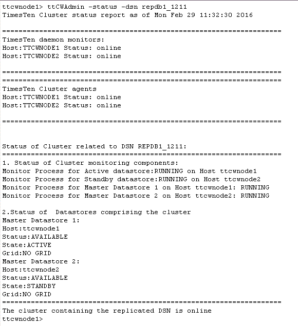
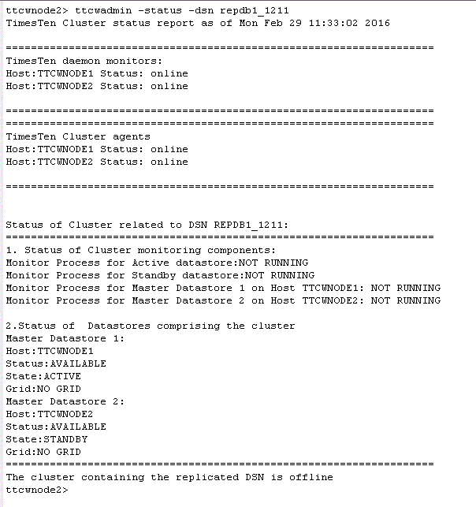
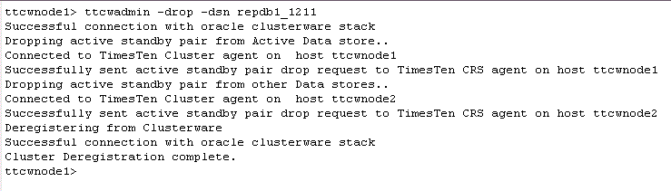
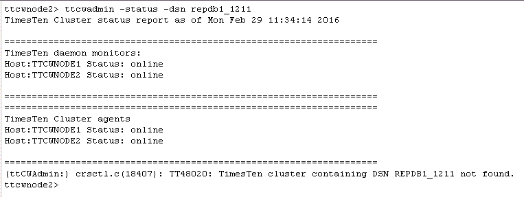
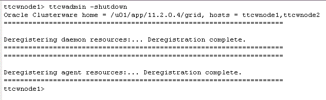
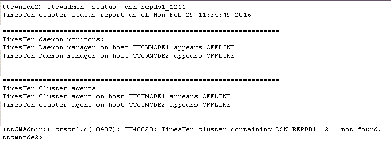

with TimesTen In-Memory Database and Clusterware
This tutorial will make use of the DSN repdb1_1211. The hostnames of the two machines in the examples are ttcwnode1 and ttcwnode2. The active database is in ttcwnode1 and the standby database is in ttcwnode2.
The following tasks are the most common management tasks once the active standby pair has been created by ttCWAdmin:
1. Check the cluster agents' status
Check the TimesTen cluster agents by executing the ttCWAdmin -status command on any one of the hosts. For example, on ttcwnode1:
ttCWAdmin -status -dsn repdb1_1211

2. Stop the Active Standby Pair
Stop the Active Standby Pair by executing the ttCWAdmin -stop command on any one of the hosts. For example, on ttcwnode1:
ttCWAdmin -stop -dsn repdb1_1211
Check the cluster status after doing ttCWAdmin -stop. For example, on ttcwnode2:
ttcwadmin -status -dsn repdb1_1211


3. Drop the Active Standby Pair
Drop the Active Standby Pair by executing the ttCWAdmin -drop command on any one of the hosts. For example, on ttcwnode1:
ttcwadmin -drop -dsn repdb1_1211

Check the cluster status after doing ttCWAdmin -drop. For example, on ttcwnode2:
ttcwadmin -status -dsn repdb1_1211

4. Shutdown the cluster agents
Shutdown the cluster agents by executing the ttCWAdmin -shutdown command on any one of the hosts. For example, on ttcwnode1:
ttcwadmin -shutdown

Check the cluster status after doing ttCWAdmin -shutdown. For example, on ttcwnode2:
ttcwadmin -status -dsn repdb1_1211

The ttCWAdmin -status command succeeds as it is querying Oracle Clusterware, which is still running.
For more information about Using, Configuring and Managing an Active Standby Pair with TimesTen and Oracle Clusterware refer to the documentation here